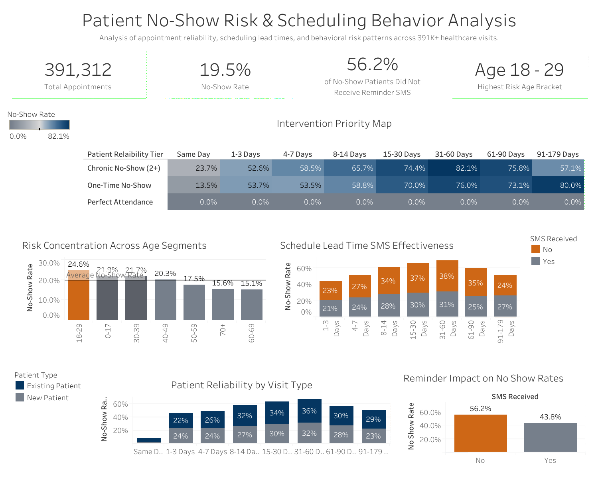

Reducing Missed Appointments Through Scheduling and Communication Improvements
Project Overview
Healthcare Operations Case Study
A healthcare analytics project analyzing patient appointment behavior to uncover operational, demographic, and scheduling factors associated with higher no-show rates using PostgreSQL and Tableau.
The Problem
Missed appointments create scheduling inefficiencies, reduce patient access to care, and negatively impact organizational performance.
The goal of this project was to identify the factors most strongly associated with appointment no-shows and recommend interventions that could improve attendance rates.
Why It Matters
Even small improvements in reimbursement efficiency can have significant financial impacts.
Reducing no-show rates benefits both patients and healthcare organizations.Improved attendance increases provider utilization, reduces scheduling gaps, and helps ensure patients receive timely care.
Data Considerations
Patient attendance behavior is influenced by multiple factors, including communication preferences, scheduling characteristics, and demographic variables.
The analysis focused on identifying actionable factors that organizations could realistically address through process improvements.Investigation
To better understand appointment attendance patterns, I analyzed patient demographics, scheduling data, communication methods, and prior attendance behavior.
The goal was to identify operational drivers of missed appointments and uncover opportunities for intervention.
Key Findings
- Only 25.6% of patients were enrolled in SMS appointment reminders.
- SMS reminder enrollment was associated with improved attendance rates.
- Longer appointment lead times increased no-show risk.
- Patients aged 18–29 demonstrated the highest no-show rates.
- Previous attendance behavior provided useful indicators of future appointment adherence.
Recommendations
Expand SMS Reminder Enrollment
Increase enrollment efforts to improve patient engagement and appointment adherence.
Reduce Scheduling Lead Times
When possible, minimize delays between scheduling and appointment dates.
Implement Targeted Outreach
Develop communication strategies specifically for high-risk patient populations.
Increase Reminder Frequency
Provide additional reminders for appointments scheduled further into the future.
Potential Impacts
The analysis estimated that increasing SMS enrollment could reduce the overall no-show rate from approximately 19.5% to 15%.
These improvements could increase provider utilization, improve patient access, and create measurable operational efficiencies.
Dashboard and Supporting Visualizations

What I Learned
This project demonstrated how relatively small operational changes can produce meaningful improvements in organizational performance. The most valuable insights were those that translated directly into practical interventions capable of improving both patient experience and operational efficiency.
Project Tools
- Database: PostgreSQL
- Data Analysis: SQL
- Visualization: Tableau
- Version Control: GitHub
- Tools: VS Code